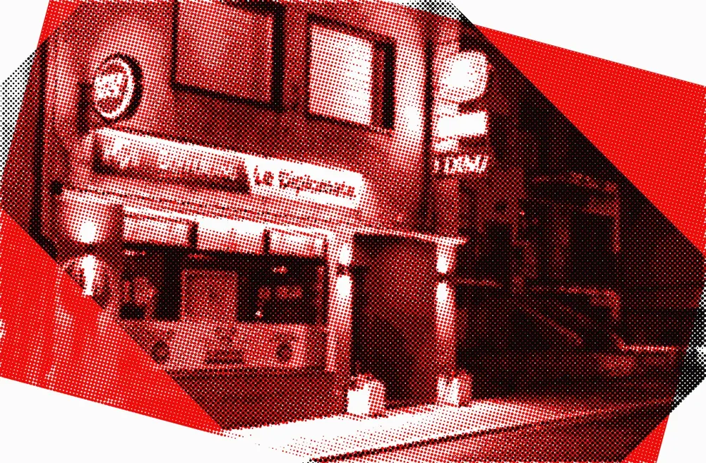
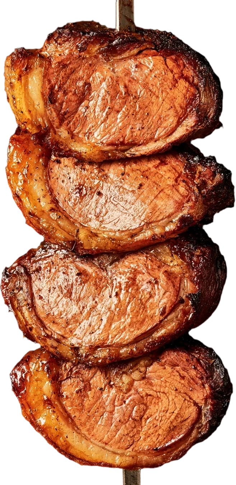
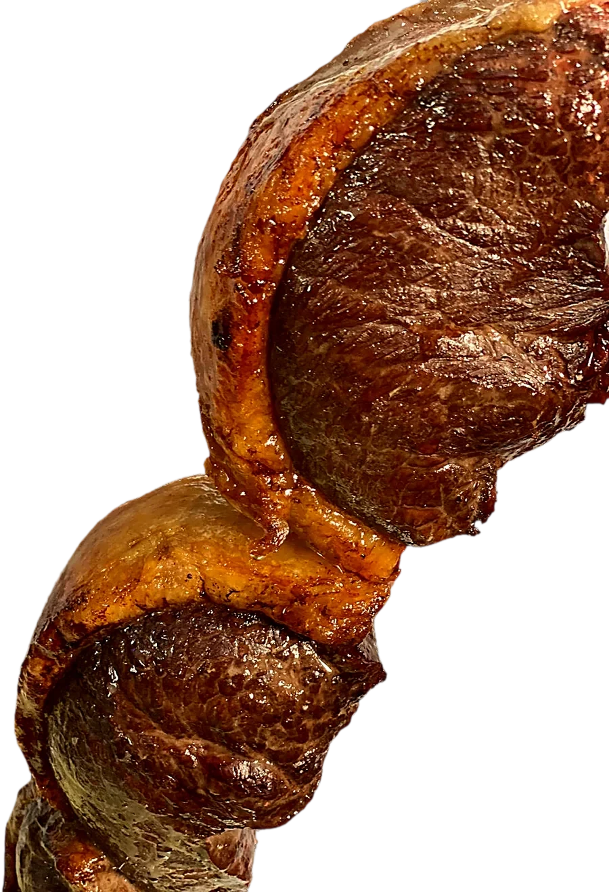
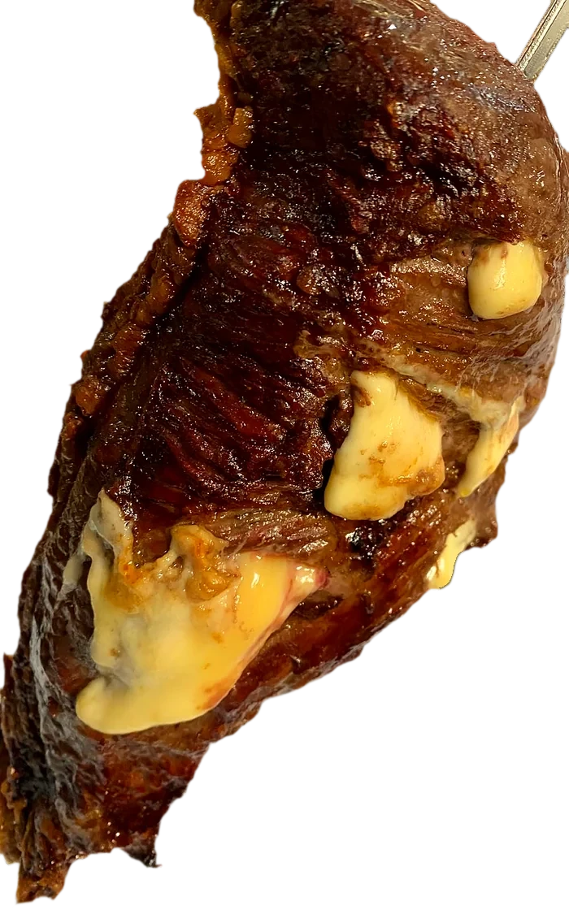
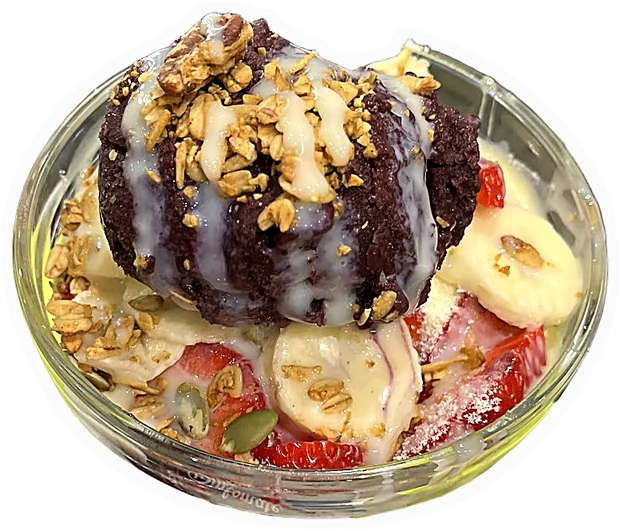
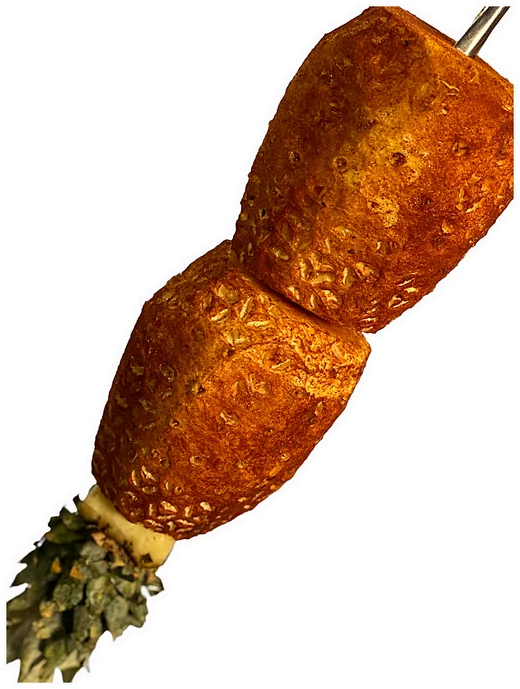
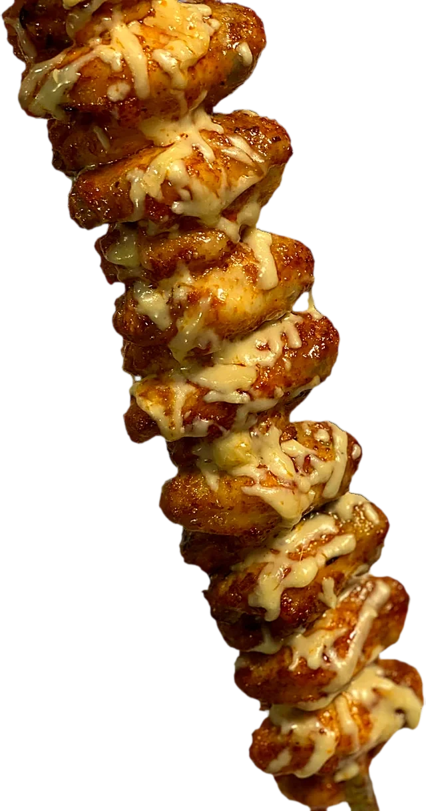
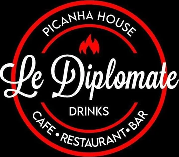

O BRASIL TEM
MORADA EM
DUDELANGE…

E O NOME É

Le Diplomate
Le Brésil a une adresse à Dudelange, et elle s'appelle Le Diplomate.
PICANHA HOUSE
Café, restaurant, bar.
9, route de Kayl, Dudelange
Infos et réservations
Rodízio de viande
à volonté

No LE DIPLOMATE não é só comida… é experiência, é ambiente, é churrasco de verdade
Au Diplomate, ce n'est pas que de la cuisine : c'est une expérience, une ambiance, du vrai churrasco.
A melhor picanha com um preço justo
La meilleure picanha, à un prix juste.

Aqui o rodízio éPESADO
Ici, le rodízio est copieux.
Plat du jour
Prato do dia
Suggestions
- Prato do dia
- Peito de frango grelhado
- Bitoque
- Bifana
- Hambúrguer
- Omelete
- Salgados

Açaí

Jus de
fruits
plus de 20 saveurs
Mangue, corossol, fraise, cupuaçu, maracujá, ananas, acérola, goyave, orange, cajá.
Caipirinhas

Soirées
On mange d’abord. On danse après.
@diplomatelux

Infos et réservations
9, route de Kayl, Dudelange
Tous les jours, du matin à 1h
Commander : Wolt, Uber Eats, Wedely